DRY DENSITY OF SOIL BY SAND REPLACEMENT METHOD
Objective:
To determine the field or in-situ density of Soil by the Sand Replacement Method.
Apparatus used:
Sand Pouring Cylinder, Weighing Scale, Cylindrical Calibrating Container, Vernier Caliper, Weighing Scale.
 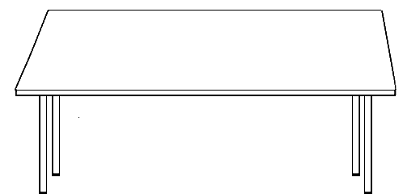
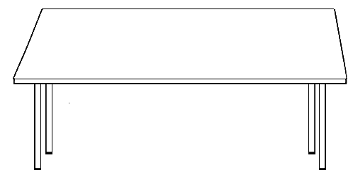
 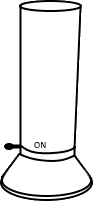
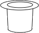
Description
Bulk Density: This method covers the determination of in-situ dry density (in g/cm3 or kg/m3) of natural or compacted fine and medium-grained soils for which a small sand pouring cylinder is used. The method applies to layers not exceeding 150mm in thickness.
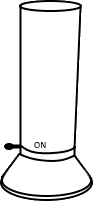
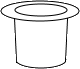
Description
Bulk Density: This method covers the determination of in-situ dry density (in g/cm3 or kg/m3) of natural or compacted fine and medium-grained soils for which a small sand pouring cylinder is used. The method applies to layers not exceeding 150mm in thickness.
Measure the height and diameter of the calibrating container and then calculate the volume of the calibrating container.
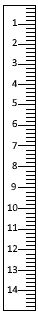Height of calibrating container, (h) =_____


Internal Diameter of calibrating container, (d) = _____
Volume of calibrating container, Vc _____
Height of calibrating container, h = 14.5cm
Internal Diameter of calibrating container, d = 10cm
Volume of Calibrating container, Vc= π(d2)⁄4*h = cm3
✔
✘
1138.685cm3
Fill the Sand Pouring Cylinder(SPC) with sand and measure its weight through weighing balance.


 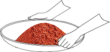
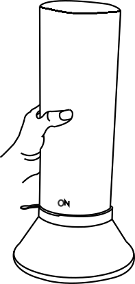
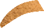
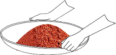
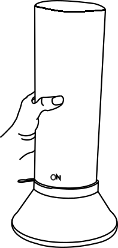
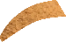
Weigh the empty weight of the calibrating cylinder. Now allow the sand to fill in the calibrating cylinder. Measure the weight of the calibrating container with sand.
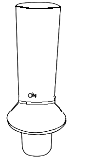


Measure weight of calibrating container with sand
Place the SPC on a glass plate. Then open the shutter and allow the sand to run out of the cylinder till it fills the conical portion and note down the weight of sand in the conical portion.
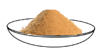
 
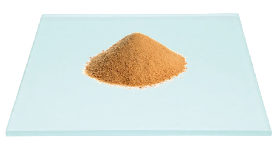
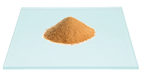
Observations: Density of sand
| Volume of calibrating container, V | 1138.685cm3 |
| Weight of SPC with sand, W1 | |
| Weight of calibrating container with sand, W2 | |
| Weight of empty calibrating container, W3 | |
| Weight of sand in cone portion, W4 | |
| Weight of sand in calibrating container without cone portion, Wa = W2-W3-W4 |
Calculations:
| Bulk density of sand, ρsand = | Wa⁄V = g/cc |
Excavate a circular hole of volume equal to that of the calibrating container. Measure weight of excavated soil in the tray and the SPC.
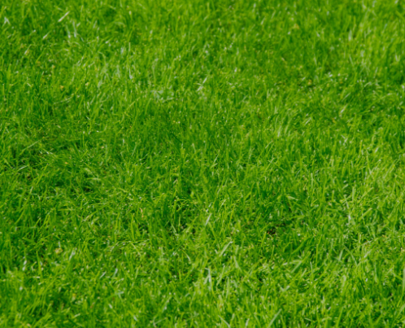
 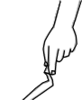
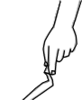
 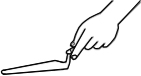
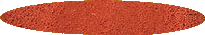
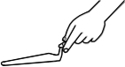
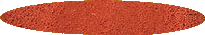

 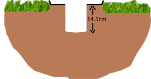
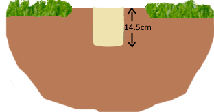
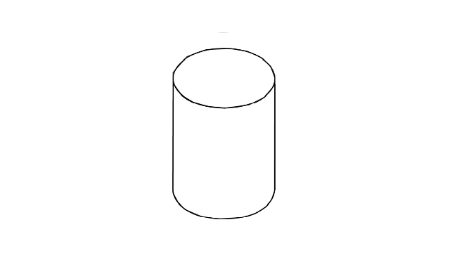
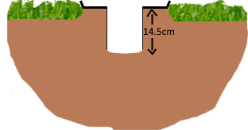
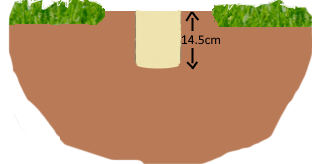
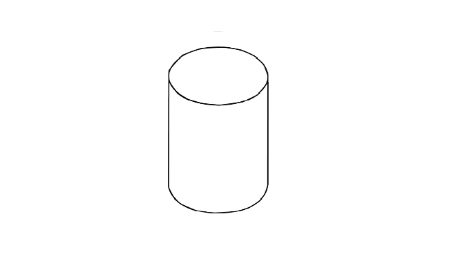

Observations: Density of soil
| Weight of sand in cone portion, W3 | |
| Bulk density of sand, ρsand | |
| Weight of sand pouring cylinder with leftover sand after in-situ procedure, W6 | |
| Weight of wet soil from the hole, Ww | |
| Weight of sand in hole, Wb = W1 - W6 |
Calculations:
| Bulk density of soil, ρsoil = | ρsand x Ww⁄Wb = g/cc |
Measure the weight of empty container through weighing balance.
Pour the excavated soil sample into the container and measure its weight.
Place the container with wet soil in the oven for 24 hours at 115°C temperature.


After 24 hours
Measure the weight of oven dried soil through weighing balance.
Repeat the procedure from step 6 - 9 for water content determination
Observations: Water content determination
| Bulk density of soil, ρsoil (g/cc) | ||||
| Bulk density of sand, ρsand (g/cc) | ||||
| Trial No. | Weight of container, w1 (g) | Weight of wet soil, w2 (g) | Weight of dry soil, w3 (g) | Moisture content, W (g) |
Calculation:
| Dry density of soil, ρd = | ρsoil⁄(1 + Average of water content) = g/cc |
Inference:
The dry density of sandy soils can be as high as 1.6 g/cc and that for clayey soils are around 1.1 g/cc. Dry density value obtained is on the lower side (i.e. 1.14 g/cc), implying it is clayey soil.


 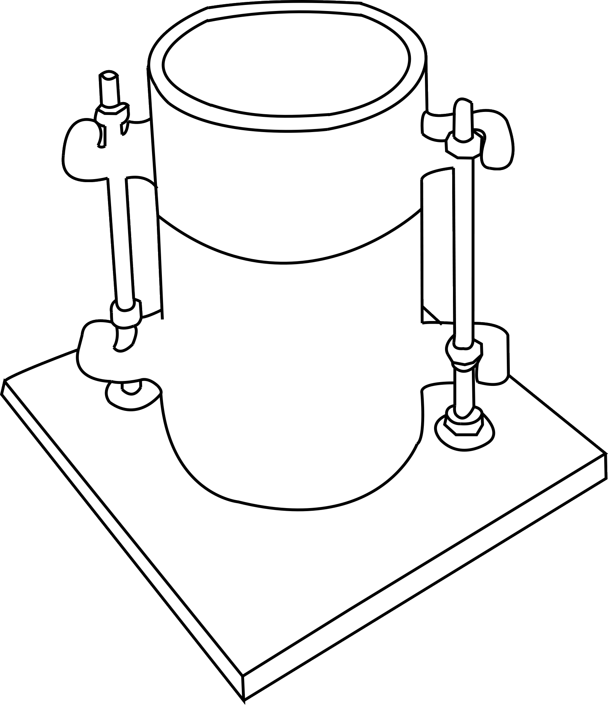
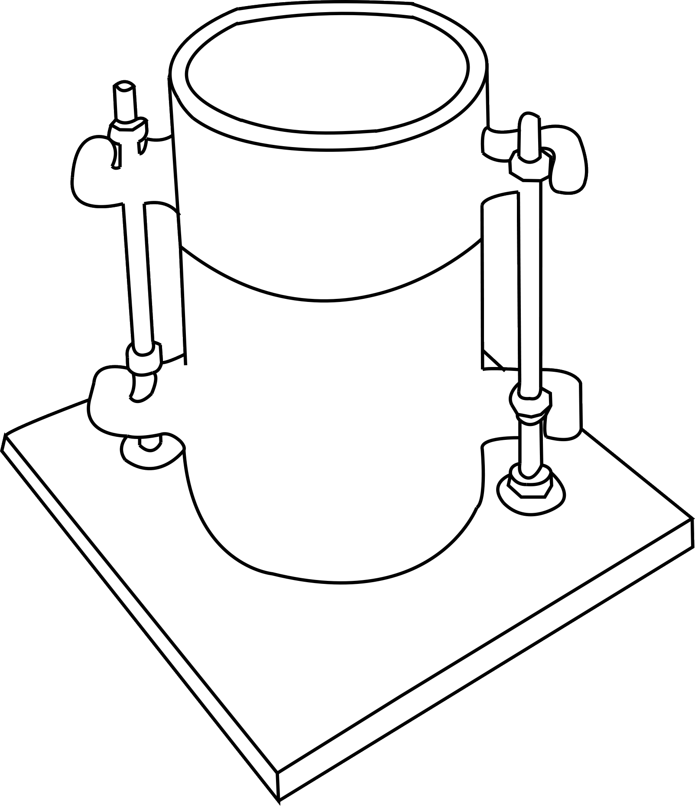


 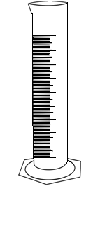
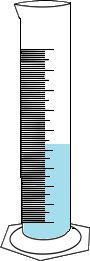
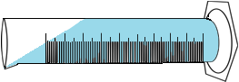
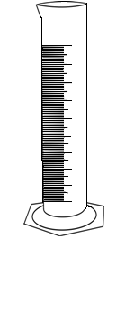
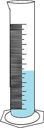
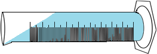


 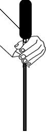
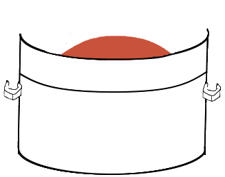
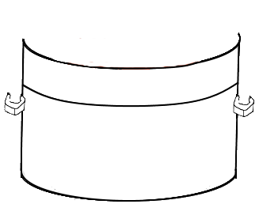
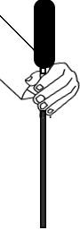
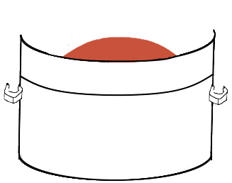
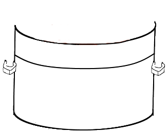